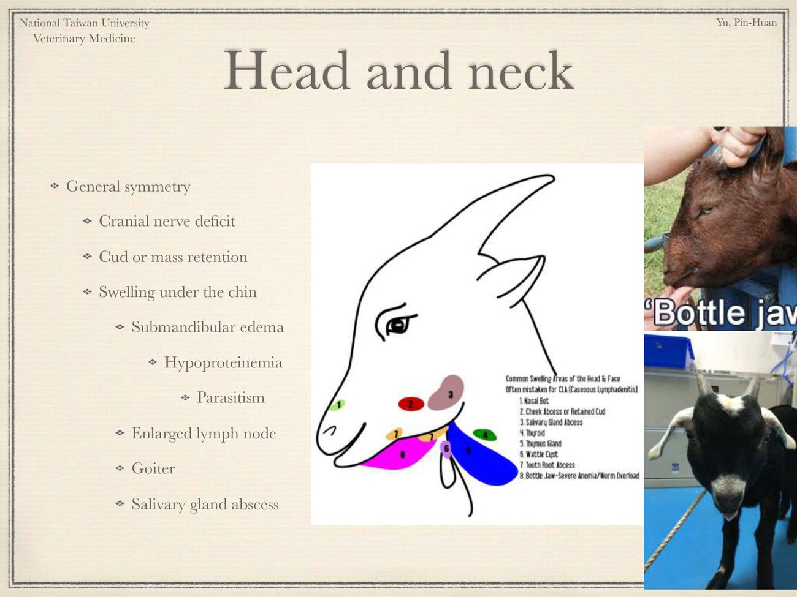
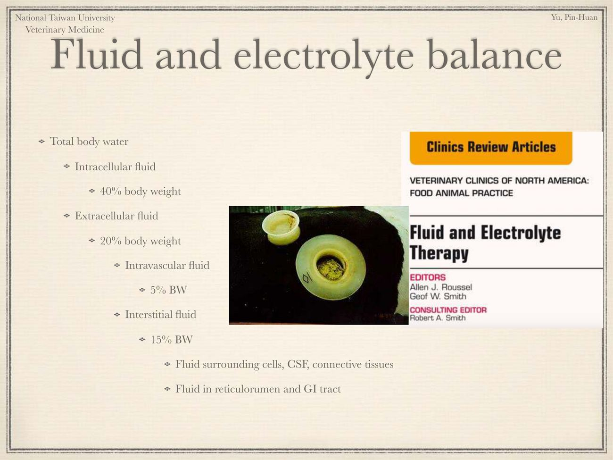
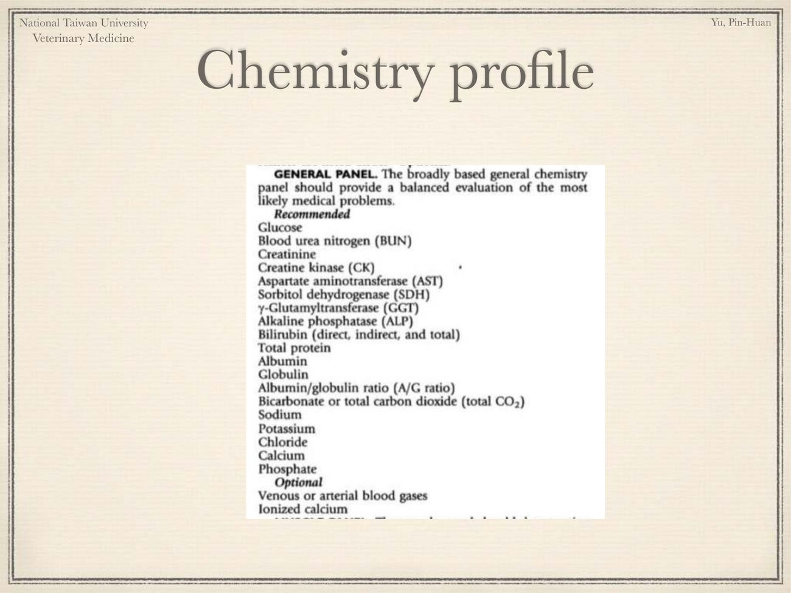

大方向與重點摘要
- 這堂課在講什麼
- 前半是綿羊與山羊的理學檢查：病史 → 遠觀 → 體態評分 → 頭頸、眼、口、牙 → 聽診（心、肺、鼻竇、氣管）→ 腸胃、泌尿生殖 → 蹄與關節 → 淋巴結 → 乳房。後半是臨床病理：保定與採血、體液與電解質、酸鹼（鹼缺乏與陰離子間隙）、鈣磷鎂、血液學、生化（血糖、BUN、肌酸酐、肝酶、蛋白、乳酸）。
- 老師的三個目標（p.2）
- ① 基本理學檢查；② 找出異常，而不是背疾病；③ 不要造成傷害（Do no harm）。結語（p.53）：羊和伴侶動物是不一樣的動物，尊重並了解相同與不同處才能診斷；一般執業獸醫不必記得所有反芻獸疾病，但要學會「do no harm」。
- 這章要抓的重點
-
- BCS：羊用腰椎棘突、橫突、背最長肌與脂肪覆蓋評 1–5 分（和乳牛看臀部不同）。
- 頭頸：下巴腫要分下頜水腫（瓶頸 bottle jaw → 低蛋白 → 寄生蟲）、淋巴結（乾酪樣淋巴結炎）、甲狀腺腫（缺碘）、唾液腺膿瘍、幼羊胸腺（milk goiter）。
- 眼：貧血 → FAMACHA（寄生蟲控制）；黃疸 → 肝病、溶血、銅中毒；紅眼病（披衣菌、Mycoplasma conjunctivae）；脫水。
- TPR 與聽診：成羊體溫綿羊 39–40°C、山羊 38–40°C；心音在前肢之間第 4–5 肋；肺野第 5 肋到第 11 肋；反覆咳嗽是異常；鼻竇叩診濁音 → 牙根膿瘍、去角傷口感染。
- 腸胃與泌尿：左腰旁窩瘤胃 1–2 次／分鐘；右上為螺旋結腸、盲腸、小腸，右下為皺胃與懷孕子宮；公羊注意尿結石徵兆。
- 蹄、關節、淋巴、乳房：腐蹄病（傳染性）與趾間皮膚炎（foot scald，腐蹄的前驅）；關節腫看 CAE 與水囊瘤；乾酪樣淋巴結炎；乳房六項（對稱、大小、顏色、溫度、形狀、質地）。
- 體液與酸鹼：ICF 40%、ECF 20%（血管內 5%、組織間 15%）BW；補碳酸氫鹽（mEq）＝ 鹼缺乏 × 體重 × 0.6（新生）或 0.3（成體）；AG ＝ Na⁺ ＋ K⁺ − Cl⁻ − HCO₃⁻，12–16。
- 鈣鎂：血鈣 6 mg/dL 臥地、4 mg/dL 致死；山羊分娩時、綿羊產前 1 個月發生乳熱；草痙攣為低血鎂。
- 血液學：山羊紅血球很小、易溶血，儀器可能誤算成血小板，禁用真空採血管、用 EDTA 管；壓力白血球像沒有左移；6–8 月齡後淋巴球多於嗜中性球。
- 生化：反芻獸血糖低（50–75 mg/dL）、不吸收預成葡萄糖；BUN 在瘤胃回收、腎病診斷價值下降；ALT 在反芻獸很低、GGT 才是肝專一；新生 1 週內 GGT 高來自初乳；尿腹時腹水肌酸酐為血清 1.5–2 倍。
- 容易混淆
- 兩位老師的 TPR 數字不同（見第 5 節）：本講義用教科書表（綿羊 39–40°C、山羊 38–40°C），Kao 老師的臨床檢查講義寫 38.5–39.5°C。瘤胃蠕動次數：本講義羊 1–2 次／分鐘，牛的講義為 3–5 次／2 分鐘。ALT 不能用來看反芻獸的肝，要看 GGT（與 AST、LDH、CK 合併判斷）。BUN 不是好的腎指標，要配合肌酸酐與尿比重。
- 考試可能怎麼問
（推測） - 綿羊山羊 TPR；BCS 觸診部位；下頜水腫的意義；FAMACHA 與捻轉胃蟲；黃疸三大原因（含銅中毒）；瘤胃蠕動與腹部輪廓分區；尿結石徵兆；腐蹄病與趾間皮膚炎；乾酪樣淋巴結炎；體液分布；碳酸氫鹽補充公式計算；AG 公式與高 AG 酸中毒原因；山羊紅血球特性與採血注意事項；壓力白血球像；反芻獸血糖、BUN、GGT 的特殊性。
內容以老師講義為主體。余品奐老師上課有大量講義以外的臨床經驗補充，這頁依使用者要求另外查了文獻與資料補充（標示「補充」並註明出處：MSD Veterinary Manual、FAMACHA 推廣資料、美國大學推廣教育文件、臺大師資資料）；講義只有關鍵字的地方，補充的解釋是依一般教科書知識寫成，以老師上課為準。「國考題」一節是從民國 97–115 年專技高考獸醫傳染病學挑出的相關題，附官方答案。標示「推測」的是出題方向推測。圖片為老師講義截圖。
關於余品奐老師
先認識老師：了解老師的背景，就懂為什麼這堂課把理學檢查和臨床病理放在一起，而且一直強調「do no harm」。
經歷與專長（補充）看過
| 項目 | 內容 |
|---|---|
| 現職 | 國立臺灣大學獸醫專業學院教授（講義封面仍寫 Assistant Professor，為較早版本）；主持特殊寵物暨野生動物醫學研究室 |
| 學歷 | 臺大獸醫學研究所博士；博士論文〈以生殖控制進行台灣獼猴族群管理之適用性：保育醫學之實踐〉（2015，指導教授季昭華） |
| 研究專長 | 特殊寵物醫學、野生動物醫學、保育醫學、牧場動物醫學 |
| 醫院職務 | 依臺大學術庫資料：臺大動物醫院影像診斷科主任（2017 起）、大動物及經濟動物科主任（2020 起）；並在特殊寵物門診看診 |
| 授課 | 動物園與野生動物醫學、臨床病理學、臨床實習與病例討論、大動物與野生動物治療學等 |
| 近年研究例 | 3D 列印技術輔助淡水龜甲殼傷口癒合（Animals, 2022）、臺灣野外綠鬣蜥 Nannizziopsis 感染調查、非洲灰鸚鵡電腦斷層血管攝影的顯影劑劑量研究等 |
| 其他 | 臺中市動物保護專家學者名單成員 |
老師同時教臨床病理、主持大動物及經濟動物科、又長期處理野生動物與特殊寵物——都是「病種多、很難全部背起來、檢查與保定要小心」的動物。所以課程重點不是疾病清單，而是一套到哪都能用的檢查流程，加上羊和犬貓不一樣的檢驗判讀（紅血球、血糖、BUN、ALT）。考試準備也可以照這個邏輯：遇到不會的病，先問「哪個系統異常、什麼檢驗能確認、怎樣不會傷害動物」。
資料來源：臺大獸醫專業學院師資頁、臺大學術庫（NTU Scholars）、臺大博碩士論文系統、臺中市動物保護防疫處專家名單（2026-10-23 查詢）。
病史、遠觀與體態評分 Signalment, History, Distance Exam & BCS
先問、先看，再動手；羊的 BCS 要摸腰椎，因為長毛會騙人。
動物基本資料與病史（p.3）理解
講義放的是臺大動物醫院大動物門診的病歷表：除了基本資料，還包括環境（溫度、通風、飼養密度、墊料）、飲水與飼料、疫苗與驅蟲、過去病史、主訴與病程、治療史與最近的改變。
遠觀（p.4）必考
- 與環境及同伴的互動（羊是群居動物，離群是警訊，補充）
- 步態、平衡、被毛
體態評分 BCS（p.5–6）必考
| 分數 | 腰椎棘突 | 腰椎橫突 | 背最長肌（loin eye） | 肌肉上脂肪 |
|---|---|---|---|---|
| 1（消瘦） | 尖銳突出 | 尖銳 | 淺 | 無 |
| 2（瘦） | 尖銳突出 | 平滑、稍圓 | 中等深度 | 少 |
| 3（中等） | 平滑、圓 | 平滑、覆蓋良好 | 飽滿 | 中等 |
| 4（肥） | 需施壓才摸得到一條硬線 | 摸不到 | 飽滿 | 厚 |
| 5（過肥） | 摸不到 | 摸不到 | 非常飽滿 | 非常厚 |
補充：綿羊有厚羊毛、山羊體型較瘦長，光看外觀很容易誤判，一定要用手摸腰椎（最後肋骨後方）。乳牛 BCS 則是從後方看臀部，見臨床檢查頁。
讀書補充Note - 老師上課補充：病史、遠觀與 BCS 怎麼做（2022 共筆）
1. 為什麼經濟動物的理學檢查特別重要
- 牧場沒有現場檢驗（血檢）可用，理學檢查最容易進行；要學會判斷異常、不要求記住疾病；檢查與治療都要 do no harm，正確用藥。
2. 病史的「群體」概念
- 被帶來看診的那一隻，代表整群的健康狀況；問廠長、酪農戶飼養管理：環境（清潔頻率、墊料、溫濕度）、飼料配方、疫苗計畫。
- 近年生態農牧場動物多元（羊駝、梅花鹿、水豚），常沒有完整疫苗與驅蟲計畫，要問出來。
3. 遠觀
- 個體 vs 群體：個別體弱的會落單、被欺負；整群狀態差多半是飼養管理問題。
- 步態：正面看，正常羊前肢比後肢併攏；站姿看蹄；腹圍、肩高的對稱性；用肚子與前胸的比例看胖瘦。
- Balance：原本用來評肉羊肌肉是否長在對的地方。
- 被毛：光澤反映營養、外寄生蟲、長毛綿羊有無打結、血漬糞便髒污；好的牧場會把母綿羊乳頭區剃光，方便小羊找乳頭吸吮。
4. BCS 實際手法
- 手掌放在後半身腰部三角區，大拇指摸棘突、其他手指摸橫突；橫突太明顯＝過瘦，完全摸不到＝太胖。
- 綿羊毛厚會影響觸感，必要時先剃毛；三角區下方也可順便感覺臟器（膨起、萎縮、乾癟）。
頭頸、眼睛、口腔與牙齒 Head & Neck, Eye, Oral Cavity, Teeth
頭頸部是羊最容易看出全身問題的地方：下巴腫可能是寄生蟲，眼結膜蒼白是貧血，黃疸可能是銅中毒。
頭頸部（p.7–8）必考
| 檢查 | 看到什麼要想到什麼 |
|---|---|
| 整體對稱 | 腦神經缺損；反芻食團或腫塊滯留在頰部 |
| 下巴腫 | 下頜水腫（瓶頸 bottle jaw） → 低蛋白血症 → 寄生蟲 |
| 淋巴結腫大（乾酪樣淋巴結炎，見第 7 節） | |
| 甲狀腺腫（goiter） → 缺碘（與土壤有關） | |
| 唾液腺膿瘍 | |
| 胸腺（milk goiter）：幼羊頸部的正常胸腺，數週到 4–9 個月隨免疫成熟消退 |

早上明顯、下午因低頭吃草而變小（補充）。代表低蛋白血症，在羊最常見的原因是捻轉胃蟲（Haemonchus contortus）吸血造成的失血與蛋白流失；看到瓶頸要同時看眼結膜（FAMACHA）。
眼睛（p.9）必考
| 發現 | 意義 |
|---|---|
| 貧血（結膜蒼白） | FAMACHA 系統 → 寄生蟲控制 |
| 黃疸 | 肝病、溶血事件、銅中毒 |
| 紅眼病 | Chlamydia psittaci、Chlamydia（講義寫 Ovis）、Mycoplasma conjunctivae |
| 其他 | 眼睛異常；脫水（眼球凹陷） |
- 南非發展的方法：用對照卡比對下眼瞼結膜顏色，找出被捻轉胃蟲（barber pole worm）重度感染而貧血的羊。
- 分 1（櫻桃紅，不貧血）到 5（白色，嚴重貧血）。
- 1、2 分不驅蟲；4、5 分驅蟲；3 分在下列情況考慮驅蟲：羊群 > 10% 是 4–5 分、小羊、懷孕或泌乳母羊、BCS 差、有其他疾病或免疫低下。
- 目的：選擇性驅蟲，減少驅蟲藥抗藥性。注意只適用於吸血性的捻轉胃蟲；其他線蟲造成的下痢與消瘦不一定貧血。
口腔與牙齒（p.10–12）理解
- 構造：皮膚與黏膜交界、硬腭、水泡（→ 口蹄疫 FMD）、黏膜（→ 藍舌病）。
- 氣味：感染性疾病（口腔膿瘍牙、瘤胃、呼吸道）；酸敗乳味 → 新生兒腭裂（乳積在鼻腔）；甜味 → 酮酸中毒。
- 牙齒：咬合、軟組織損傷；用門齒數目與狀況估年齡。
補充：羊只有下門齒，上方是齒墊（dental pad）。口唇周圍結痂要鑑別傳染性膿疱性皮膚炎（羊口瘡，orf）與羊痘（後者會有全身症狀，見羊傳染病頁）。
讀書補充Note - 頭頸腫脹逐一鑑別：老師口述的臨床細節（2022 共筆）
先講結論：頭頸腫脹一定要依位置＋年齡做區別診斷，老師特別強調「各位置的區別診斷很重要」。
1. 對稱性
- 腦神經缺損例：單側眼皮下垂、耳朵一垂一立，可能是打架創傷造成的神經症狀。
2. 各腫脹位置（對照講義圖的編號）
- 鼻蠅幼蟲（nasal bot）：靠近鼻吻部；看分泌物多寡、單雙側、有無膿、奶臭味。小羊若有上顎裂，奶流進鼻腔結成乳塊 → 細菌孳生化膿，又吸引蒼蠅產卵，可見蛆在爬、鼻子噴膿惡臭。
- 頰部膿瘍或滯留食團：多來自牙齒；牛羊嘴唇遲鈍，吃到釘子、尼龍線、鐵絲不會吐出，刮傷頰部形成膿瘍。
- 唾液腺膿瘍：創傷（打架、撞圍欄）→ 唾液外漏被當外來物 → 發炎成囊腫或膿瘍；好發好動的小公羊與好鬥成羊（年齡是診斷關鍵）。
- 甲狀腺腫：缺碘。場內應提供鹽磚，只給低碘食鹽易缺碘；放牧羊靠吃草時食入少量土壤補礦物質，同一片缺碘草地重複放牧仍會發生。嚴重時整個脖子腫，遮住其他構造。
- 胸腺：羊的胸腺從脖子延伸到入胸處（小動物集中在前胸），共五顆（下顎基部正中一顆、左右各兩顆），位置偏腹側；甲狀腺偏背側、兩顆。Milk goiter 好發 4–9 月齡吸乳小羊，是免疫發育中的正常腫大，會消。
鑑別：甲狀腺腫只向左右腫；milk goiter 是多發性腫大。 - 肉垂囊腫（wattle cyst）：常被其他小羊當乳頭吸，或被剛離乳、進入口腔期的小羊咬傷而化膿。
- 牙根膿瘍：多源自下排牙齒，常因年老磨損或咬到鐵片鐵絲斷齒感染；可見膿與牙齒磨損。
- 瓶頸（bottle jaw）：寄生蟲造成貧血與低白蛋白 → 整個下巴水腫。
3. 淋巴結腫：感染多為多發性，可做細針抽吸（FNA）。
讀書補充Note - FAMACHA 系統是什麼？
1. 一句話
- 用下眼瞼結膜的顏色對照色卡，快速估計羊的貧血程度，找出被捻轉胃蟲（Haemonchus contortus）重度感染的羊，只替這些羊驅蟲（選擇性驅蟲）。
- 名稱源自南非發展此法的人名縮寫（記憶補充，未查證，非考點）。
2. 原理
- 捻轉胃蟲寄生在皺胃吸血 → 失血性貧血＋低蛋白血症（下巴水腫＝瓶頸）。
- 貧血 → 下眼瞼結膜由紅變白；看結膜就能估計，不必逐隻抽血。
3. 怎麼判讀（1 櫻桃紅 → 5 白色）
- 1、2 分：不驅蟲。
- 3 分：臨界；群內 > 10% 為 4–5 分、小羊、懷孕或泌乳母羊、BCS 差、有其他疾病時才考慮驅蟲。
- 4、5 分：驅蟲。
4. 為什麼要選擇性驅蟲：全群定期驅蟲會很快選出抗藥性蟲株。
5. 限制與連結
- 只適用吸血的捻轉胃蟲；其他線蟲造成的下痢、消瘦不一定貧血。
- 瓶頸要和結膜一起看，兩者都指向捻轉胃蟲。
- 國考 105-1 #47：羊嚴重感染捻轉胃蟲的主要症狀＝貧血（B）。
- 分級與驅蟲條件出自 UF/IFAS、URI 推廣資料（同本頁「FAMACHA 補充」）；老師講義只寫名稱，考試以上課說法為準。
讀書補充Note - 眼、口腔、牙齒：上課補充（2022 共筆）
1. 眼睛
- 羊的瞳孔是扁裂隙狀。
- 水合：看眼球位置有無凹陷、拉眼皮看回彈速度。
- 為什麼用 FAMACHA：三百隻羊逐一抽血效率差又貴，對照色卡可快速判斷個體。貧血 → 先懷疑寄生蟲（消化道寄生蟲出血；慢性血痢；血液寄生蟲溶血）。
- 綿羊對銅需求低，誤食其他動物飼料或飼料加過量銅 → 銅中毒溶血 → 黃疸。
- 紅眼病可擦眼分泌物做分子診斷。
2. 口腔
- 皮膚與黏膜交界處檢查 CRT（微血管回充時間）。
- 水泡位置：在黏膜上 → 懷疑口蹄疫；在嘴唇皮膚與黏膜交界 → 痘病毒好發處（羊痘死亡率高、為法定傳染病，形成摸起來較實質的斑塊）。
- 硬腭：上排沒有牙齒，用開嘴器或手指伸入摸上顎有無裂開；上顎裂小羊喝奶會噴奶、有酸臭奶味。
- 藍舌病：唇舌缺氧發紺、舌頭藍紫。
3. 口臭分類
- 口腔、牙根、鼻竇膿瘍：濃重臭味
- 瘤胃問題（鼓脹）：噯氣酸、像壞掉的汽水
- 呼吸道疾病：口鼻部異味
- 上顎裂：酸奶味
- 酮酸中毒：甜味、水果香
4. 牙齒估年齡：羊上顎為齒墊、只有下顎有門齒。< 1 歲乳齒小、間隙大；1 歲起從中間換 2 顆大恆齒，之後每年向外換 2 顆，到 4 歲換完；間隙很大代表至少 4 歲；老年磨損變小，可用磨損程度估距離 4 歲多遠。
生命徵象、聽診與叩診 TPR & Auscultation
羊的正常值要和牛分開記；山羊的體溫範圍比綿羊寬。
生命徵象（p.13 表）必考
| 項目 | 綿羊（成） | 山羊（成） | 小綿羊 lamb | 小山羊 kid |
|---|---|---|---|---|
| 直腸溫（°F） | 102–103.5 | 100.5–103.5 | 102.5–104 | 102–104 |
| 直腸溫（°C） | 39–40 | 38–40 | 39.5–40.5 | 39.5–40.5 |
| 心跳（次/分） | 70–80 | 70–90 | 80–130 | 90–150 |
| 呼吸（次/分） | 12–20 | 15–30 | 20–40 | 20–40 |
Kao 老師〈Clinical Examination in Ruminants〉寫羊 38.5–39.5°C、心跳 70–110、呼吸 15–40；小羊 39.0–40.0°C、110–140、40–65（見臨床檢查頁）。兩份都是教科書數字、來源不同，作答時看是哪位老師出題。共同點：小羊三項都比成羊高、羊的心跳比牛快。
聽診位置（p.13）必考
- 心臟：前肢之間、第 4–5 肋（把前肢往前拉，聽診器放在肘下）。
- 肺：前界第 5 肋、後界第 11 肋；也要聽肘下與肩前。
鼻竇叩診（p.14）理解
| 叩診濁音的部位 | 可能原因 |
|---|---|
| 上頜竇 | 牙根膿瘍 |
| 額竇 | 去角傷口感染、上行性呼吸道感染 |
| 腫瘤 | 罕見 |
氣管與喉（p.15）必考
- 氣管聽診：喘鳴（wheeze）、爆裂音（crackle）。
- 觸診喉與氣管（誘咳）：反覆咳嗽是異常的（正常最多咳一下）。
讀書補充Note - 聽診與叩診：上課補充（2022 共筆）
- 聽心肺要把聽診器伸到肩胛骨後面（胳肢窩內）：羊的肩胛骨大，會包住胸腔；有時呼吸聲會蓋過心音。
- 呼吸道要整條聽：氣管前、中、後段 → 前胸上、中、下三分之一；第 5 肋可聽到前葉肺音，第 5–11 肋間可聽到清楚的肺音。
- 量肛溫時順便看肛門周圍髒汙、陰部有無異常分泌物。
- 鼻竇叩診：正常是空氣（中空）；濁音（不中空、有水的悶聲）或叩擊有實質感 → 可能有膿。上頜竇 → 後排牙齒牙根膿瘍；額竇 → 去角傷口、上行性呼吸道感染。
- 去角與額竇：羊角血液循環豐富且與額竇相通；牧場為避免打鬥會鋸角，鋸太慢時血管無法被熱燒灼 → 出血填滿額竇 → 感染；填充沒做好也會感染。
- 喉頭與氣管觸診給外力刺激：持續或重複咳嗽即為異常，需要更多檢查。
腸胃道與泌尿生殖道 Gastrointestinal & Urogenital
從後面看腹部輪廓，就能猜是哪個器官出問題；公羊排尿用力要先想到尿結石。
腹部輪廓與分區（p.16）必考
| 位置 | 器官與重點 |
|---|---|
| 左側 | 瘤胃：輕度不對稱是正常的；在左腰旁窩聽，1–2 次收縮／分鐘 |
| 右上（右腰旁窩） | 螺旋結腸、盲腸、小腸 |
| 右下 | 皺胃、懷孕子宮 |
| 全面性膨大 | 肝病、心臟病、寄生蟲（腹水） |
| 其他 | 糞便沾汙後軀（下痢） |
補充：從後方看腹部常用「蘋果與梨」：左上與右下都脹（像蘋果＋梨）見於迷走神經性消化不良；左右下都脹見於懷孕或腹水。這是牛常用的判讀，羊可比照（推測）。
泌尿生殖道（p.17）必考
- 包皮：尿結石的徵兆；檢查陰莖時讓羊側躺或坐立（upright）把陰莖推出來。
- 陰囊：形狀扭曲、不對稱。
- 外陰：分泌物、外陰炎。
- 去勢公羊（wether）風險最高：太早去勢讓尿道沒長到應有的管徑。
- 結石常卡在尿道突（urethral process，陰莖末端細管）或 S 狀彎曲（sigmoid flexure）。
- 飲食：精料多、磷多是主因；建議日糧 Ca:P ＝ 2:1；氯化銨可酸化尿液預防磷酸鹽結石；確保飲水。
- 徵兆：排尿用力、甩尾、尿液滴流、包皮毛上有結晶；膀胱破裂會「水腹」（尿腹，見生化的肌酸酐比值）。
- 處置要點（do no harm）：先檢查並切除阻塞的尿道突常能立即緩解；尿道阻塞的羊不要給利尿或大量輸液後才處理阻塞。
讀書補充Note - 腸胃與泌尿生殖：上課補充（2022 共筆）
1. 腹部
- 站在羊正後方看單側鼓脹或不對稱；原因可能是空氣、蠕動不好、異物。
- 左腰旁窩鼓脹＋嘴巴有果香味（酮體） → 懷疑瘤胃酸中毒；左側問題幾乎都是瘤胃（佔整個左半邊）；腰旁窩凹陷消失＝瘤胃腫脹。
- 聽瘤胃蠕動：聽診器要停在瘤胃上聽滿一分鐘（1–2 次／分鐘）。
- 全身性腫脹：低蛋白血症造成腹水，肚子對稱下垂、有沉重感；肝、心、寄生蟲；水腫讓腹側腰旁窩也腫。
- 糞便沾汙：通常是精料吃太多或有腹水。
2. 公羊尿結石
- 結石卡在尿道突（陰莖最前端的小突起） → 排尿不順、陰莖水腫，通常觸診摸得到結石；若是尿道較後段破裂 → 包皮水腫。
- 陰莖藏在包皮深處，公羊包皮繫帶很強韌、陰莖又滑 → 推包皮需要兩個人：羊側躺或坐著，一人保定、一人推包皮，用紗布增加摩擦力。
3. 陰囊與外陰
- 陰囊扭轉 → 腫起、發黑。
- 外陰分泌物一定要找出原因：清澈多為發情或懷孕的正常現象；感染則看性狀、味道、顏色。
肌肉骨骼、淋巴與乳房 Musculoskeletal, Lymphatic & Mammary
羊的跛行大多在蹄；體表膿瘍先想乾酪樣淋巴結炎；乳房要兩側對比。
蹄的分區與修蹄（p.18–19）理解
蹄部病灶分區（p.18）：0 趾間皮膚、1–3 白線（蹄壁與蹄踵交界）、4 蹄底後部、5 蹄底前部、6 蹄踵、7–8 蹄壁內外半、9 蹄冠帶與皮膚、10 蹄踵上方與之間的皮膚。
腐蹄病 vs 趾間皮膚炎（p.19–20）必考
| 趾間皮膚炎 Foot scald | 腐蹄病 Foot rot | 蹄膿瘍 Foot abscess | |
|---|---|---|---|
| 講義 | 趾間潰瘍；腐蹄與蹄膿瘍的前驅 | 蹄內感染、具傳染性、與受汙染的土壤有關 | （p.20 照片） |
| 補充：病原 | Fusobacterium necrophorum | Dichelobacter nodosus（主要）＋ F. necrophorum | 多為 Trueperella pyogenes、F. necrophorum |
| 補充：外觀 | 趾間皮膚紅、濕、發白 | 蹄底與蹄壁分離（underrun）、有特殊惡臭 | 單一蹄趾腫脹發熱、劇痛 |
補充：國考考過「綿羊傳染性腐蹄病主要病原」＝ Dichelobacter nodosus（見國考題）。潮濕與修蹄不足是主要誘因，控制靠修蹄、蹄浴、隔離跛行羊。
關節（p.21）必考
- 觸診：熱、痛、腫；活動範圍。
- 山羊腕關節腫：CAE（山羊關節炎腦炎）、水囊瘤（hygroma）。
淋巴系統（p.22）必考
- 淋巴結正常時不一定摸得到。
- 腫大破潰最常見：乾酪樣淋巴結炎（caseous lymphadenitis, CLA）。
- 病原：Corynebacterium pseudotuberculosis，慢性傳染病。
- 傳播：剪毛、打耳標、斷尾、去勢的皮膚傷口，或接觸破潰病灶的膿；較少經吸入或食入。
- 外部型（體表淋巴結膿瘍，山羊較常見，尤其下頜與腮腺）；內臟型（內臟膿瘍、慢性消瘦，綿羊較常見，稱「瘦母羊症候群 thin ewe syndrome」）。
- 診斷：未破潰膿瘍的膿培養確診；SHI 抗體試驗。
- 處置：引流、隔離到癒合、抗菌藥；商業羊群最實際的是淘汰；有人畜共通風險，處理膿要防護。
補充：頭頸部腫脹不一定是 CLA，p.7 的圖就是在提醒「常被誤認為 CLA」的 8 種腫脹。
乳房（p.23）必考
檢查六項：對稱、大小、顏色、溫度、形狀、質地；照片可見乳汁異常（凝塊、水樣）與乳房皮膚病灶。
讀書補充Note - 蹄、關節、淋巴結、乳房：上課補充（2022 共筆）
1. 蹄
- 常因磨損不足發展出蹄病，容易被忽略，直到站不起來才被發現。健康的蹄兩葉、水滴型，站立時蹄面完全接觸地面，側面看為斜度很小的梯形；蹄過長要修。
- 原因：養在高床磨損不足；養在地上接觸糞尿、潮濕悶熱 → 蹄底感染。
- Foot scald：兩片蹄之間的皮膚軟組織感染（細菌或黴菌、墊料造成的小傷口）；難發現、難痊癒；沒處理好、土壤裡又有病原菌就會往下發展。
- Foot rot：蹄葉本身潰爛；共筆記的病原為 Fusobacterium necrophorum、Bacteroides melaninogenicus（老師說不用背；國考答案是 Dichelobacter nodosus，見本頁國考題）。病原在土壤裡，有傳染性 → 出現 foot rot 時整個場的底材都要清空消毒。
- Foot abscess：細菌進入蹄上方骨頭或軟組織，可能要大範圍清創甚至截肢。
2. 關節
- 地面不平（水泥不平、小石塊）讓關節反覆摩擦 → 發炎、液體堆積（水腫、水瘤）。
- 水囊瘤（hygroma）：組織液堆積，好發老年、肥胖、關節反覆受刺激的動物；CAE 關節腫要觸診、穿刺確診。蹄病有時會連帶關節，甚至同時呼吸道感染。
3. 淋巴結
- 共筆列：下頜、舌下、肩前、腋下、膝膕等；正常應摸不到，摸到代表已有一定疾病狀態，通常是繼發、全身性疾病的指標。
- 乾酪樣淋巴結炎：傳染力強，不可在現場清創（膿會汙染環境）；會痛、會閃、甚至攻擊。
4. 乳房：對稱性最重要，大小不一定有問題，不對稱才要擔心；乳管堵塞破裂可產生額外開口；粉紅乳汁＝出血；過濾後見乳塊。
保定與採血 Restraint & Blood Collection
臨床病理的第一步是安全地拿到好的檢體。
保定與採血（p.25–27）理解
講義照片：抱頸與跨騎保定、讓綿羊坐起（臀部著地）保定（剪毛、修蹄、檢查陰莖常用）、頸靜脈採血。
補充（do no harm）：山羊角不要當把手猛拉（可能骨折出血）；綿羊不要抓羊毛提起（皮下瘀血、屠體損傷）；採血用小號針、輕抽，配合山羊紅血球易溶血的特性。
讀書補充Note - 保定與抽血：上課補充（2022 共筆）
- 保定：抓羊角或羊腳；讓羊側靠自己的身體，抓靠近操作者那側的前後腳使羊側躺；拉直尾巴可控制前進方向。
- 抽血：頸靜脈；右撇子用左手壓脖子基部讓血管浮起、右手入針；羊的血管相對粗，容易大量採血。
- 山羊紅血球易溶血：用較粗的針頭、緩慢抽，不用真空管（見血液學一節）。
體液、電解質與酸鹼 Fluid, Electrolyte & Acid–Base
脫水幾乎是所有病的共同表現；要補多少水、多少碳酸氫鹽，靠這一節的公式。
體液分布（p.28）必考
| 區室 | 佔體重 | 內容 |
|---|---|---|
| 細胞內液 ICF | 40% | — |
| 細胞外液 ECF | 20% | 血管內液 5% ＋ 組織間液 15% |
| 其他（跨細胞液） | — | 細胞周圍液、腦脊髓液、結締組織液；網瘤胃與腸胃道內的液體 |

補充：反芻獸瘤胃液量很大，是可動用的「水庫」，也可在脫水時流失（例如瘤胃酸中毒時水被吸進瘤胃）；所以口服補液在反芻獸特別好用。
ECF 與 ICF 的平衡（p.29）理解
- 液體移動：靜水壓與膠體滲透壓（Starling 力）。
- 電解質：Na⁺-K⁺ ATPase；細胞外以氯與碳酸氫根為主、細胞內以磷酸與蛋白為主。
脫水與鈉（p.30–31）必考
- 脫水是許多疾病的共同表現，通常同時流失水與電解質；高血鈉、高血氯不常見；常伴酸鹼異常；需要實驗室檢驗輔助。
| 血鈉 | 機轉 | 脫水型態 | 例子 |
|---|---|---|---|
| 低血鈉 | 水過多（相對） | 低張性脫水 | 慢性脫水 |
| 高血鈉 | 缺水 | 高張性脫水 | （喝不到水，補充） |
| 不變 | 水鈉等比例流失 | 等張性脫水 | 急性下痢、大量出汗 |
鉀與氯（p.32）理解
- 鉀：受脫水、酸鹼失衡、腎功能、尿路阻塞影響（補充：酸中毒時鉀移出細胞 → 血鉀可正常或升高，但全身鉀可能不足）。
- 氯：與鈉等比例變化；與碳酸氫根反向變化（補充：皺胃阻塞或移位時 Cl⁻ 被隔離 → 低血氯、代謝性鹼中毒）。
酸鹼判讀三步驟（p.33–34）必考
- CO₂ ＋ H₂O ⇌ H⁺ ＋ HCO₃⁻；HCO₃⁻ 是體內主要的酸緩衝物；HCO₃⁻ 改變 → pH 改變 → 啟動代償。
- 酸鹼異常應在麻醉前矯正，麻醉中可耐受，要慢慢矯正，除非是呼吸性事件。
看 pH：酸血症或鹼血症
呼吸性或代謝性（PCO₂ 或 HCO₃⁻）
代償反應與病程
| 原發異常 | 原發改變 | 代償 |
|---|---|---|
| 呼吸性酸中毒 | PCO₂ ↑ | HCO₃⁻ ↑ |
| 呼吸性鹼中毒 | PCO₂ ↓ | HCO₃⁻ ↓ |
| 代謝性酸中毒 | HCO₃⁻ ↓ | PCO₂ ↓ |
| 代謝性鹼中毒 | HCO₃⁻ ↑ | PCO₂ ↑ |
鹼缺乏與碳酸氫鹽補充（p.35）必考
新生兒：碳酸氫鹽（mEq）＝ 鹼缺乏 × 體重（kg）× 0.6
成體：碳酸氫鹽（mEq）＝ 鹼缺乏 × 體重（kg）× 0.3
- 鹼缺乏（base deficit）是血氣分析常規提供的數值，代表矯正代謝性酸中毒需要的碳酸氫鹽量。
- 係數 0.6 vs 0.3：新生兒 ECF 比例較高，碳酸氫鹽分布空間較大（補充）。
- 計算：4 kg 小羊、鹼缺乏 10 → 10 × 4 × 0.6 ＝ 24 mEq；用 8.4% 碳酸氫鈉（1 mEq/mL）＝ 24 mL（補充：通常先給一半，慢慢 IV，再重新評估）。
陰離子間隙（p.36–37）必考
AG ＝ Na⁺ ＋ K⁺ − Cl⁻ − HCO₃⁻，參考值約 12–16（有物種差異）；代表未測量陰離子：蛋白質（白蛋白）、硫酸根、磷酸根、乳酸、酮體。
| 類型 | 原因（講義） |
|---|---|
| AG 降低的酸中毒情境 | 低白蛋白血症、高血氯；伴低血鉀 → 下痢；伴高血鉀 → 腎衰竭 |
| AG 升高（代謝酸增加） | 乳酸（無氧運動、穀物過食、低血容性休克）、酮酸中毒、尿毒性酸中毒 |
補充：下痢造成的是「高血氯、AG 正常」的代謝性酸中毒（流失 HCO₃⁻，用 Cl⁻ 補位）；穀物過食、酮症、休克則是「AG 升高」。講義把下痢與腎衰竭放在「AG 降低（或正常）」一欄，依講義原文記。
讀書補充Note - 體液與酸鹼：上課補充（2022 共筆）
1. 血液氣體分析的兩層意義
- 早期：急救——選輸液種類與量、要不要給鹼。晚期：找原因（哪種離子）、怎麼矯正、飼養管理怎麼改。只佔體重 5% 的血管內液，可以用來推判全身體液平衡。
2. 反芻獸常見脫水原因：下痢、過度運動、精料攝食過多。
3. 離子
- 鈉：低血鈉為水過多稀釋，脫水時不易見，除非低張脫水。
- 鉀：機制複雜，最常見是腎功能異常與泌尿道阻塞 → 鉀排不出 → 高血鉀（公羊尿結石時要注意）。
- 氯：通常與鈉一起升降。
⚠ 與講義不同：共筆寫「最常見的為高血鈉，多為水分流失使鈉被濃縮」；講義寫「Hypernatremia/Hyperchloridemia not common」。以講義為準，上課時確認。
4. 陰離子間隙
- 現在機器可直接測離子、乳酸、酮體，所以 AG 較少用。
- AG 上升例子：無氧運動——捕捉性疾病（長時間追捕造成乳酸堆積）；精料過食——瘤胃微生物產生過多乳酸；低血容性休克；酮酸中毒——懷孕動物能量不足代謝脂肪；尿毒症。
5. 碳酸氫鈉：補鹼通常用 NaHCO₃，先依商品濃度算劑量，再加入輸液點滴給予。
鈣、磷、鎂 Calcium, Phosphorus & Magnesium
羊的乳熱發生時間和牛不一樣：綿羊在產前一個月。
鈣（p.38）必考
- 功能：神經衝動、肌肉收縮、血液凝固。
- 6 mg/dL → 臥地；4 mg/dL → 致死。
- 受常見代謝調節；血中分蛋白結合鈣與游離鈣；酸中毒時鈣從蛋白上解離（游離鈣↑）。
- 磷：受飲食、荷爾蒙、維生素 D 影響。鎂：與營養及環境交互作用有關。
乳熱與草痙攣（p.39）必考
| 疾病 | 電解質（講義） | 發生時間 |
|---|---|---|
| 乳熱（parturient paresis） | 低血鈣、低血磷、血鎂正常 | 山羊：分娩時；綿羊：產前 1 個月 |
| 草痙攣（grass tetany） | 低血鎂、低血鈣（講義寫「hypocalcemia, normal calcium」，原文前後矛盾，應為筆誤） | — |
補充：綿羊在懷孕後期（多胎時）胎兒骨骼鈣化需求最大，所以低血鈣出現在產前；乳用山羊則和乳牛一樣出現在分娩泌乳時。牛的乳熱治療與 DCAD 見轉換期頁。草痙攣多見於放牧在快速生長、高鉀低鎂的牧草上（補充）。懷孕末期綿羊還要鑑別妊娠毒血症（低血糖、酮體高，見生化）。
讀書補充Note - 鈣、磷、鎂：上課補充與發生時間的不一致（2022 共筆）
1. 鈣
- 共筆寫參考值 7–12 mg/dL；6 mg/dL 倒臥、4 mg/dL 心肌受損致死。
- 看到動物站不起來，第一時間先補鈣。
- 鈣、磷、鎂在大動物要一起驗，產乳、懷孕、飲食不足都會讓三者失衡。
- 共筆：酸血症時鈣與蛋白分離，測到偏低值不一定是真的缺鈣，此時要先矯正酸血症（補充：酸血症時游離鈣其實上升；此說法以老師上課為準）。
2. 鎂：是輔酶，缺鎂會讓鈣吸收變差；身體無法儲存，要不斷從食物補充；乳汁含大量鎂，大量產乳易缺鎂。
3. 草痙攣：可發生在任何放牧動物；下雨後青草長得快、鎂含量低，大量食用再加上泌乳排鎂 → 缺鎂。
⚠ 與講義不同：乳熱發生時間各來源說法不同，作答以講義為準：
| 來源 | 山羊 | 綿羊 |
|---|---|---|
| 本講義 | 分娩時 | 產前 1 個月 |
| 余老師第三週共筆 | 產前幾週或產後立即 | 產後一個月 |
| 余老師第五週共筆 | 產前（幾週前） | 產後（2 週後）；發生率約 5% |
| 許凱程老師共筆（乳牛課） | 羊通常是產前發生 | |
血液學 Hematology
山羊的紅血球很小、很容易破：採血與機器判讀都要特別注意。
山羊紅血球（p.40）必考
- 很小（MCV 15–26 fL）、容易溶血。
- 自動血球計數儀可能誤判成血小板。
- 禁用真空採血管（vacutainer）（負壓造成溶血）；用 EDTA 管。
- 血球形態提供重要資訊（一定要看抹片）。
正常值（p.41 表）理解
| 項目 | 成綿羊 | 成山羊 |
|---|---|---|
| 血容比（%） | 27–45 | 22–36 |
| 血紅素（g/dL） | 9–15.8 | 8–12 |
| 紅血球（×10⁶/μL） | 9–17.5 | 8–17 |
| MCV（fL） | 28–40 | 15–26 |
| MCHC（g/dL） | 31–34 | 29–35 |
| 血小板（×10⁵/μL） | 2.4–7.0 | 2.8–6.4 |
| 白血球（/μL） | 4,000–12,000 | 4,000–13,000 |
| 分節嗜中性球（/μL） | 1,500–9,000 | 1,400–8,000 |
| 帶狀嗜中性球 | 0 | 0 |
| 淋巴球（/μL） | 2,000–9,000 | 2,000–9,000 |
| 總血漿蛋白（g/dL） | 6.2–7.5 | 6.0–7.5 |
| 纖維蛋白原（mg/dL） | 100–600 | 100–500 |
補充：反芻獸的發炎指標常用纖維蛋白原（升高比白血球數更敏感）；正常值不出現帶狀嗜中性球。
貧血（p.41–42）必考
| 類型 | 原因（講義） |
|---|---|
| 失血 | 外傷、寄生蟲（捻轉胃蟲） |
| 溶血：毒素 | 銅（綿羊）、洋蔥、蕨類（bracken fern）；Heinz body → 氧化傷害 |
| 溶血：免疫媒介 | 罕見：penicillin、小反芻獸餵牛初乳 |
| 溶血：其他 | 紅血球寄生蟲；細菌毒素（Clostridium、Leptospira） |
| 慢性病 | 肺炎、腐蹄病、乾酪樣淋巴結炎、營養不良、環境緊迫 |
| 幼齡 | 小牛（羊）的變形紅血球（poikilocyte） |
- 綿羊是最敏感的家畜：銅慢慢累積在肝臟，遇到緊迫（運輸、處理、天候、懷孕泌乳、營養變差）時大量釋出 → 溶血危象。
- 症狀：沉鬱、虛弱、臥地、瘤胃停滯、黏膜蒼白、血紅素尿、黃疸；剖檢槍鐵色腎（gunmetal kidneys）。
- 飼糧銅：鉬比 6:1 理想、10:1 可耐受；治療用 ammonium tetrathiomolybdate 螯合、調整飼糧（降銅、加鉬與硫代硫酸鹽）。
- 臨床陷阱（do no harm）：給綿羊吃牛或山羊的飼料、礦物舔磚是常見原因。
白血球（p.43–46）必考
| 細胞 | 講義重點 |
|---|---|
| 嗜中性球 | 幼齡反芻獸以嗜中性球為主；3 歲以上山羊 N:L 約 1:1 或 3:2；發炎白血球像：比例改變、出現未成熟（帶狀）嗜中性球；嗜中性球可有退化、毒性、未成熟變化，白血球總數不一定改變 |
| 壓力白血球像 | 嗜中性球增多、淋巴球減少、嗜酸性球減少，沒有左移 |
| 淋巴球 | 6–8 月齡後多於嗜中性球；淋巴球增多：慢性病毒感染、慢性化膿性疾病、自體免疫 |
| 嗜酸性球 | 寄生蟲反應 |
| 嗜鹼性球 | 成體罕見；過敏與發炎（組織胺） |
| 單核球 | 不是敏感的疾病指標 |
補充：反芻獸骨髓的嗜中性球儲存池小，嚴重急性發炎時常出現白血球減少＋左移（消耗大於生產），不像犬貓多半白血球升高；所以「白血球數正常」不能排除感染，要看形態與纖維蛋白原。淋巴球增多也要想到牛白血病（BLV）。
讀書補充Note - 血液學：上課補充與不一致處（2022 共筆）
1. 紅血球
- 山羊紅血球太小，CBC 機器量不準，需用計數盤計算。
- 易因壓力破裂溶血 → 粗針頭、慢慢抽，不用真空管。
- 血液寄生蟲：焦蟲（Babesia）、血液型黴漿菌（Mycoplasma）；小羊（小牛）變形紅血球為正常生理現象。
- 羊駝、駱馬：紅血球呈紡錘（橢圓）狀；生活於高海拔、耐缺氧，輕微貧血（PCV 低）也沒症狀，為正常現象。
⚠ 與講義不同：共筆寫免疫媒介性溶血「相當常見」，羊容易對盤尼西林過敏（尿液變深紅、黏膜越來越淡），小羊喝牛初乳也會引起；講義寫 Rare。以講義為準，但臨床上用 penicillin 後尿變紅要想到它。
2. 白血球與年齡（老師在課堂上特別框起來）
| 年齡 | 共筆記錄的白血球組成 |
|---|---|
| 6–8 月齡前 | 淋巴球最多 |
| 6–8 月齡至 < 3 歲 | 嗜中性球 70–80% |
| > 3 歲 | 嗜中性球：淋巴球 ＝ 1:1 或 3:2 |
- 共筆例子：5 月齡小羊嗜中性球上升 → 感染；2 歲羊嗜中性球多 → 不能說是感染。
- 3 歲以前很難只用嗜中性球數判斷感染，要看帶狀嗜中性球數、體溫、明顯外傷、嗜中性球升到約 90%。
- 即使有感染，白血球總數也不一定明顯增加。
- 嗜酸性球：寄生蟲時上升（重要 DDx）；單核球不敏感，只能當次要指標。
⚠ 與講義不同：本頁上方依講義寫成「幼齡以嗜中性球為主、6–8 月齡後淋巴球多於嗜中性球」；共筆記下的課堂說法是「6–8 月齡前淋巴球最多、之後到 3 歲嗜中性球 70–80%」，兩者方向相反。考試請以老師上課說法為準（可問老師）。
生化與乳酸 Chemistry Profile & Lactate
反芻獸的血糖、BUN、ALT 都和犬貓不一樣：照搬犬貓的判讀會誤診。

血糖（p.48）必考
- 代謝特殊：不從腸道吸收預成的葡萄糖（靠丙酸糖質新生，見營養頁）。
- 參考值較低：50–75 mg/dL；沒有餐後高血糖。
- 高血糖：腸毒血症、李斯特菌症、緊迫；糖尿病罕見。
- 低血糖：敗血症、營養不良、妊娠毒血症。
補充：腸毒血症（Clostridium perfringens D 型，「過食病」）的高血糖與糖尿是經典線索；妊娠毒血症多見於懷多胎、懷孕後期、過胖或餓到的母羊，低血糖＋血中 β-羥丁酸升高。
腎指標（p.49）必考
| 指標 | 講義重點 |
|---|---|
| BUN | 尿素循環與其他哺乳類相同，但在功能性瘤胃中被回收 → 對腎病的診斷價值降低 |
| 肌酸酐 | 不受代謝影響（較可靠）；尿腹：腹水肌酸酐為血清的 1.5–2 倍 |
| BUN 與肌酸酐 | 腎功能喪失 75% 才上升 |
| 尿比重 USG | 66% 腎元失去功能時喪失濃縮能力；氮血症時 USG > 1.025 → 腎前性；< 1.025 → 講義寫「腎後性」 |
注意：一般判讀是「氮血症＋USG 無法濃縮（< 1.025）→ 腎性氮血症」；講義原文寫 post renal，可能是筆誤，上課時請確認。尿腹（膀胱破裂）的經典原因是公羊尿結石（見第 6 節）。
肝酶（p.50）必考
| 酵素 | 講義重點 |
|---|---|
| ALT | 在反芻獸很低（不是肝指標） |
| AST、LDH、CK | 合併判讀，區分肌肉與肝臟傷害（CK 高 → 肌肉） |
| GGT | 肝專一：膽汁滯留、肝膽疾病、肝脂肪沉積；也有腎 GGT（尿中）、初乳 GGT；迷走神經性消化不良、皺胃扭轉時也可上升；新生 1 週內因初乳而高 |
| 原則 | 需要一組檢驗合併判讀 |
補充：新生仔畜血清 GGT 很高，可間接表示有喝到初乳（被動免疫轉移，見仔牛疾病頁）。SDH（山梨醇脫氫酶）是急性肝細胞傷害的指標，但體外不穩定。
蛋白（p.51）必考
- A/G 比：容易被忽略但很敏感，反映慢性發炎（球蛋白↑）。
- 低球蛋白血症：新生兒——母源抗體被動轉移失敗，或轉移的抗體被快速消耗。
乳酸（p.52）必考
| L-乳酸 | D-乳酸 | |
|---|---|---|
| 來源 | 哺乳類細胞無氧代謝 | 微生物代謝 |
| 意義 | 代謝性酸中毒 | 與仔牛下痢的酸中毒相關 |
高乳酸血症：瘤胃乳酸酸中毒（穀物過食、中毒性消化不良）、低血容性休克、敗血性休克、組織灌流下降。
補充：一般手持乳酸計與多數生化儀只測 L-乳酸；仔牛下痢與瘤胃酸中毒常是 D-乳酸升高，所以「乳酸正常」不代表沒有乳酸性酸中毒——這時看 AG 升高更有用。
讀書補充Note - 生化與尿檢：上課補充（2022 共筆）
- 血糖：反芻獸沒有餐後高血糖，驗血糖不用禁食。
- 尿檢很重要：反芻獸尿量多、好採集。
- ALT：草食獸都很低，不是首選，但肝病時還是會上升，懷疑肝病時仍會驗。
- 迷走神經性消化不良、皺胃扭轉時肝指數上升不一定是肝病，可能是周圍組織病變壓迫肝臟。
- < 1 週齡新生兒：要多方面綜合評估，所有肝酶都上升才敢說是真的肝病（初乳 GGT 會讓 GGT 單獨升高）。
- 球蛋白 ＝ 總蛋白 − 白蛋白；新生兒被動免疫要在出生兩天內完成評估；看到新生幼獸過瘦、虛弱、像有感染，就要看球蛋白。
- 乳酸：機器無法區分 L 與 D 型，要再排除是否為細菌增生造成。
更多尿檢細節見下一節「第二堂共筆」。
余品奐老師第二堂（共筆）：小羊、代謝異常、輸液與尿檢
本學期講義沒有這一堂；以下整理自 2022 年第五週共筆（余品奐老師），是本頁體液、酸鹼、鈣鎂與生化的臨床應用。重點：先穩定（水、離子、酸鹼），再處理病因。
本節內容來自學長姐共筆，不是老師講義；數字與說法以老師上課為準。共筆記下的考題方向：給情境、血檢與 reference，要能決定用什麼輸液、給多少液體、多少碳酸氫鈉、打多快。
小羊的被動免疫必考
- 小羊在母羊懷孕約 80 天開始產生自己的免疫球蛋白，但量少，要到出生後約 6 週才有功能；母源抗體不經胎盤 → 初乳非常重要。
- 被動免疫失敗原因：初乳品質差（母羊沒打疫苗、低蛋白）、量不夠（多胞胎、母羊乳量不夠、弱勢羊搶不到）、吸收不良。
- 診斷：一日齡小羊血中免疫球蛋白應達 800 mg/dL；總蛋白水合狀態下 5.5–6 g/dL（脫水會偽高）；小羊出生不會喝水，唯一水分來源是母乳 → 乾巴巴代表沒喝或不夠；感染跡象：白血球高、發燒、下痢、肺炎、精神差。
- 治療：
- 口服初乳：24 小時內最好，至少 48 小時前要給；體重 5%，出生後 4 與 12 小時各一次；可擠其他母羊的奶，但不可給不同物種的奶（如牛初乳），會引起免疫溶血。
- 合成免疫球蛋白 IV 或 IP，量為體重 10%，缺脂溶性維生素 A、D、E、K 要另外補；或輸其他羊的血漿（可能排斥）。
- 環境衛生；已有感染證據時給抗生素。
- 預防：母羊營養與免疫計畫（分娩前 6 週與 2 週）；綿羊毛蓋住乳房時剃掉。
新生兒敗血症理解
- 病因：被動免疫失敗（先決條件）、緊迫（過度密集、不同年齡混養 → 弱勢羊 cortisol 高、嗜中性球功能下降）、營養不均（硒、銅、維生素 E）。
- 途徑：腸胃道（新生兒以胞飲作用吸收力強，病從口入）、臍帶、呼吸道、皮膚傷口。病原多為消化道革蘭氏陰性菌（如 E. coli）。
- 症狀：體溫時高時低、倒臥休克（指逐漸惡化的過程）、下痢（出現時已很嚴重）、關節腫、眼前房積膿、腦膜炎、肺炎 → 這些都是繼發於敗血症，先給抗生素，不是先照 X 光。
- 診斷：細菌培養要 2 天緩不濟急，CBC 一小時內有結果；現場用臨床分數（水合、鞏膜血管怒張、精神、臍帶感染、下痢）約 10 分鐘決定是否治療；出生 > 7 天被動免疫開始下降。
- 治療：強效後線抗生素 ceftiofur、消炎藥 flunixin、輸成羊血漿或免疫球蛋白、輸液（途徑與劑量共筆未寫）。
新生兒下痢的分級與輸液計算必考
| 等級 | 臨床 | 脫水 | pH | 鹼缺乏（mEq/L） | 處置 |
|---|---|---|---|---|---|
| Mild | 精神好、會跑跳吃（BASE），只見肛門沾糞 | < 5% | 7.30–7.50 | 0 | 補水即可 |
| Moderate | 沉鬱離群但對刺激有反應、皮膚回彈延長、進食慢頭低 | — | 7.10–7.25 | 5 | 補水＋碳酸氫鹽 |
| Severe | — | — | 6.9–7.10 | 10 | — |
| Very severe | 拎起來不會動 | — | 6.8–7.0 | 15–20 | — |
- 首要目標：12–24 小時內矯正水合、離子、酸鹼；次要才是營養（先給口服輸液試水溫，再慢慢加奶）；最後才針對病原；不建議預防性抗生素，除非懷疑敗血。
- 白血球看嗜中性球比例而非總數；脫水會見高白蛋白血症與氮血症。
3 kg 小羊、脫水 10%、鹼缺乏 16 mEq/L、昏迷、皮膚回彈延長（→ very severe）。
- 補水：0.10 × 3 kg × 1 L/kg ＝ 0.3 L（300 mL）。
- 補鹼：16 × 3 × 0.6（新生兒係數）＝ 28.8 mEq 碳酸氫鹽。
- 速度：依病程急緩決定。
- 選輸液：例如低血鈉時用 300 mL 0.9% NaCl＋碳酸氫鈉；碳酸氫鈉可能與輸液成分沉澱，可用兩台幫浦分開打。
⚠ 共筆寫「一般 sodium bicarbonate 每 cc 4 mEq，要抽 7 cc」；常見的 8.4% 碳酸氫鈉是 1 mEq/mL（28.8 mEq 約 29 mL）。實際依產品濃度計算。
成羊瘤胃酸中毒與腸毒血症必考
| 瘤胃酸中毒 Rumen acidosis | 腸毒血症 Enterotoxemia | |
|---|---|---|
| 原因 | 攝入過多精料或碳水化合物（觀光農場餵精料、仙貝）→ 細菌過度增生、乳酸堆積、瘤胃炎、產氣腹脹 | Clostridium perfringens（G+ 桿菌、腸道常在菌）；腸道內容物快速改變、碳水過多、菌叢失衡或緊迫 → 大量增殖產毒 |
| 症狀 | 通常 12 小時內發生；沉鬱、厭食、蠕動停滯、下痢；腹痛（磨牙、心跳上升、踢肚子、回頭看肚子、嚎叫）；鼓音、聽腰旁窩兩三分鐘沒有蠕動、水聲；尿 pH 5–6；羊少見蹄葉炎 | 成羊：疼痛、瘤胃鼓脹、神經症狀、輕微下痢、死亡；小羊：持續水痢甚至血痢、踢肚子嚎叫、神經症狀 |
| 診斷 | 瘤胃液 pH < 5.5、看菌相；血氣：代謝性酸中毒伴呼吸代償 | 病史（吃太多）；黃金標準：糞便或瘤胃液分離出 C. perfringens（大量）；ELISA 驗毒素 |
| 治療 | 先輸液矯正脫水、酸鹼、離子；置換健康瘤胃液重建菌相（需 2–3 天） | 輸液與碳酸氫鹽、NSAIDs；抗生素（penicillin、tetracycline、TMS）但無法消除毒素；C、D 型抗毒素中和；活性碳、kaolin／pectin 等吸附與保護黏膜 |
腹痛區別診斷（共筆）：瘤胃酸中毒、腸毒血症、腸阻塞（異物、扭轉、線蟲堵塞——年輕羊愛亂吃）、尿結石（膀胱脹痛也會回頭看肚子）。
僵直、低血鈣與低血鎂必考
- 產前後低血鈣：不是每頭都會，有缺鈣病史者發生率較高；四肢僵直、肌肉顫抖、倒臥、強直性痙攣、頭轉不回來；原因：營養不足、飼養管理（弱勢搶不到食物）、內分泌（如低血鎂影響鈣吸收）。
- 常與妊娠毒血症同時發生（熱量不足 → 脂肪代謝 → β-羥丁酸 → 酸血症）；驗血可見低血鈣＋高酮體。
- 單純缺鈣：20% calcium borogluconate 30–60 mL IV，推約 5–7 分鐘（太快會暫時高血鈣、心律不整，要監控心跳）；SC／IM 較安全、慢慢吸收就會站起來。
- 低血鎂：鎂體內儲存少（共筆比喻「月光族」），大量產乳或尿糞排出、飼料鈉鉀過高都會讓鎂負平衡 → 肌肉僵直，又讓鈣吸收變差。急診 IV 給 4–5% 氯化鎂（或硫酸鎂）＋ 20% calcium borogluconate 50 mL，注意不要讓氯或磷過高；一般口服氧化鎂，但它是軟便劑，過量下痢反而造成代謝紊亂。
輸液途徑與腸外營養理解
- 急診通常快速 IV；輕中度失衡可用口服輸液：反芻獸胃大可承受大量、便宜（不用無菌、可用鹽巴泡）、較安全（低血鉀低血磷時，IV 鉀過高可致死，無法監控時用口服）。
- PPN（部分腸外營養：脂肪、醣、胺基酸，有熱量）：厭食 > 3 天、瘤胃不動、嚴重下痢或嘔吐、嚴重全身性疾病、蛋白消耗太快時使用；TPN 則一天所需全部由 IV 給。
- 缺點：昂貴、要嚴密監控（無菌、滲透壓）；併發症：高血糖、脂血症、低血鉀（胰島素把鉀帶進細胞）、再餵食症候群（致命性低血鉀、低血磷）、靜脈炎（滲透壓高）。坊間「營養針」沒有熱量，跟 PPN 不同。
尿檢必考
- 重點是 free catch，尿不能碰地：捏住鼻子、給新鮮牧草、引進其他動物（宣示地盤會尿）、讓動物坐下再站起來。
- 尿比重 > 1.025 為正常；會浮動，要多採幾次取平均，不可用單一次判斷。
- pH 正常 7.5–8.5；一定要同時驗血；瘤胃酸中毒時尿也酸；反常性酸尿（鹼血酸尿）通常與消化道阻塞有關。
- 蛋白：正常驗不到；尿偏鹼會讓試紙偽陽性（sulfosalicylic acid 混濁法與比色試紙都要注意）。
- 葡萄糖：血糖 > 81 mg/dL（腎閾）就會出現在尿中；原因：C. perfringens D 型腸毒血症、corticosteroid、xylazine、葡萄糖輸液、緊迫。
- 酮體：酮體有乙醯乙酸、丙酮、β-羥丁酸；試紙通常只驗前兩種，妊娠毒血症以 BHB 為主 → 可能偽陰性、低估；酮會揮發要即時判讀；酮是能量不平衡、預後不好的指標。
- 潛血：紅色尿可能是血紅素（溶血）、肌紅素（肌溶解）或血球（真血尿）；離心後有下層血球＝真血尿，上清液紅＝血紅素或肌紅素（肌紅素偏紅棕）；配合 CK 與貧血判讀。
首要處理：矯正酸鹼、脫水、離子不平衡 → 一定要會輸液；其次才是鑑別診斷與病因處置；要了解各種檢驗方法的結果與價值。
Take Home Message 與比較整理
把老師的結語，和本頁最容易考的「羊 vs 牛 vs 犬貓」差異放在一起。
- 羊和伴侶動物是不同的動物。
- 尊重並理解相同與不同之處，才能幫助診斷。
- 一般執業獸醫不必記得所有反芻獸疾病，但要學會「do no harm」。
羊 vs 牛 vs 犬貓：判讀差異必考
| 項目 | 羊（本講義） | 牛（其他講義） | 犬貓（補充，對照用） |
|---|---|---|---|
| BCS 怎麼評 | 摸腰椎棘突、橫突與肌肉 | 從後方 45° 看臀部 V／U | 看腰身、摸肋骨 |
| 瘤胃蠕動 | 1–2 次／分鐘 | 3–5 次／2 分鐘 | — |
| 血糖 | 50–75 mg/dL，無餐後高峰 | 同為反芻獸，偏低 | 較高、有餐後上升 |
| 腎指標 | BUN 被瘤胃回收，靠肌酸酐與 USG | 同 | BUN 有用 |
| 肝指標 | ALT 低；看 GGT、AST、SDH | 同 | ALT 為主 |
| 紅血球 | 山羊極小、易溶血、禁真空管 | — | — |
| 乳熱時間 | 山羊分娩；綿羊產前 1 個月 | 產後 0–3 天 | 犬產後子癇（補充） |
相關國考題（專技高考獸醫傳染病學）
從民國 97–115 年專技高考「獸醫傳染病學」挑出和本講義主題相關的題目，附官方答案與解析。
本講義是理學檢查與臨床病理，國考中的「臨床病理學」科目題庫目前尚未收錄；下列題目出自傳染病學科目，對應本頁提到的寄生蟲貧血、腐蹄病、CAE、乾酪樣淋巴結炎、黴漿菌。題號格式「年度-次別 #題號」。
線蟲要用驅蟲藥，不是抗生素。(B) 白色卵巢纏繞紅色腸道，就是「理髮店旋轉燈（barber pole）」名稱由來。第 4 胃＝皺胃。
講義：腐蹄病具傳染性、與受汙染土壤有關，趾間皮膚炎是其前驅（p.19）；主要病原 D. nodosus，常與 Fusobacterium necrophorum 協同（補充）。(D) 造成惡性水腫。100-1 #40 題目相同，官方答案缺。
講義（Kao 老師）：多數（約 70%）無症狀、10–30% 發病；腦炎是白質腦脊髓炎、主要在 2–4 月齡（107-1 #46 官方答案即「白質腦脊髓炎」）；主要經乳汁感染而非先天。成羊少數也會有神經症狀（官方答案）。本頁 p.21 關節腫要想到 CAE。
羊黴漿菌：結膜炎（M. conjunctivae，本頁眼睛一節）、關節炎、乳房炎、肺炎；不造成腸炎。
本頁乳房檢查一節；講義沒有提到此病原（補充）。
考試方向（推測）
以下是依講義強調的內容推測的出題方向，不是考古題，考試範圍以老師上課為準。
| 可能考法 | 答題重點 |
|---|---|
| 課程目標 | 基本理學檢查；找異常而非背疾病；do no harm |
| BCS | 1–5；腰椎棘突、橫突、背最長肌、脂肪 |
| 下巴腫 | 下頜水腫（低蛋白、寄生蟲）、淋巴結、甲狀腺腫（缺碘）、唾液腺膿瘍；幼羊胸腺 |
| 眼 | 貧血 → FAMACHA；黃疸 → 肝病、溶血、銅中毒；紅眼病病原；脫水 |
| 口腔氣味 | 酸敗乳味 → 腭裂；甜味 → 酮酸中毒 |
| TPR 與聽診 | 綿羊 39–40°C、山羊 38–40°C；心在 4–5 肋；肺 5–11 肋；反覆咳嗽異常；鼻竇濁音 |
| 腹部分區 | 左瘤胃 1–2 次/分；右上腸道；右下皺胃與子宮；全面性：肝心寄生蟲 |
| 蹄 | 腐蹄（傳染、土壤）；趾間皮膚炎為前驅 |
| 體液 | ICF 40%、ECF 20%（血管內 5%、組織間 15%） |
| 鈉與脫水型態 | 低鈉＝低張（慢性）；高鈉＝高張；不變＝等張（急性下痢、出汗） |
| 碳酸氫鹽計算 | BD × BW × 0.6（新生）／0.3（成體） |
| AG | Na＋K−Cl−HCO₃，12–16；高 AG：乳酸、酮酸、尿毒 |
| 鈣 | 6 臥地、4 致死；乳熱低鈣低磷正常鎂；山羊分娩、綿羊產前 1 月；草痙攣低鎂 |
| 山羊血液 | RBC 小、易溶血、誤判血小板、禁真空管、EDTA；壓力白血球像無左移；6–8 月齡後淋巴球為主 |
| 生化 | 血糖 50–75；BUN 瘤胃回收；肌酸酐可靠、尿腹 1.5–2 倍；75% 腎功能喪失才氮血症；ALT 低、GGT 肝專一；初乳 GGT |
| 乳酸 | L（哺乳類）vs D（微生物，仔牛下痢）；高乳酸：穀物過食、休克 |
練習題 Practice Quiz
1（櫻桃紅）、2 不驅蟲；4、5 驅蟲；3 依羊群狀況與個體（小羊、懷孕泌乳、BCS 差）決定。選擇性驅蟲可減少抗藥性。
成體係數 0.3：12 × 30 × 0.3 ＝ 108 mEq。(B) 誤用新生係數 0.6。8.4% NaHCO₃ 為 1 mEq/mL → 108 mL（補充）。